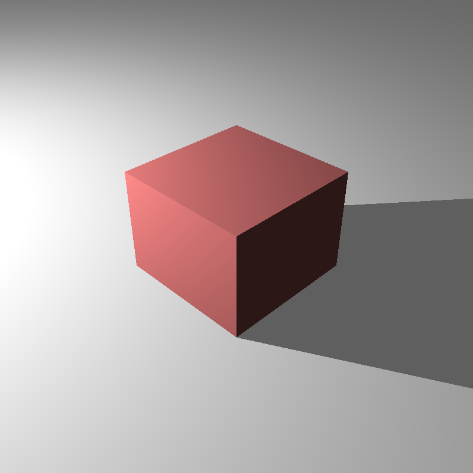
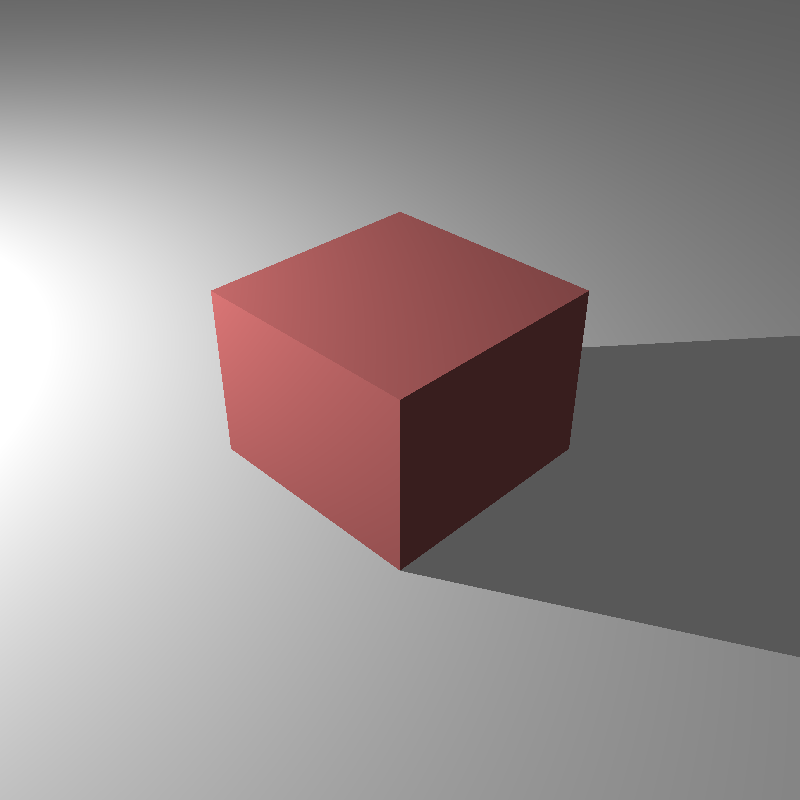
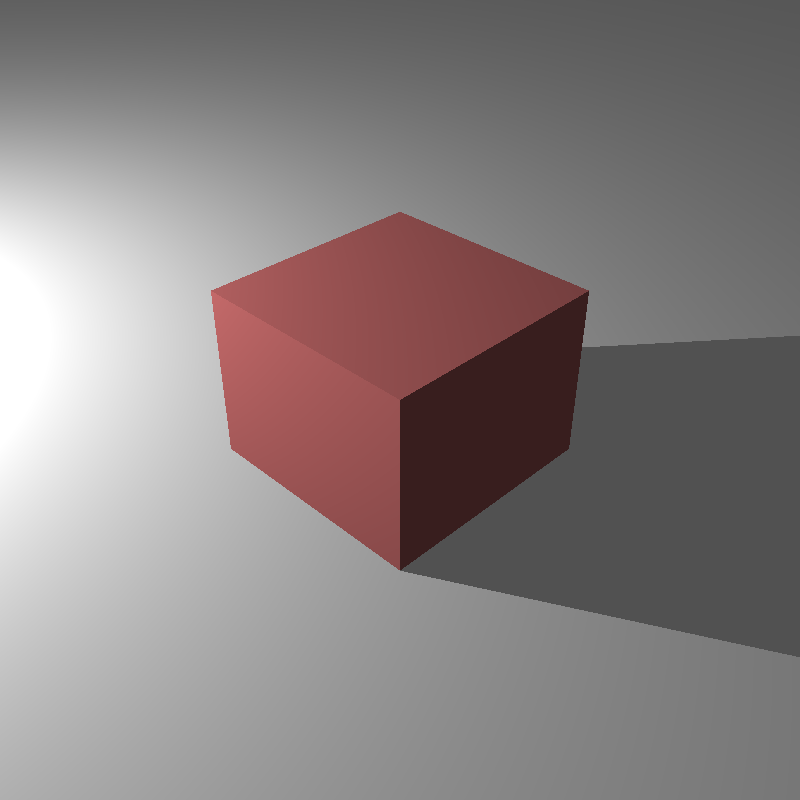

In my previous homework, the tone mapped colors looked washed out because I was treating every sRGB material colors as linear. Since some input colors are already gamma-encoded, using them directly in lighting calculations leads to incorrect results. To fix this, I implemented a `_degamma` attribute in the parser. When enabled, this flag linearizes the input colors by raising them to the power of gamma. This ensures that all rendering calculations happen strictly in linear space, resulting in accurate and vibrant colors after the final gamma correction step.

cube_point_hdr_aces.png

cube_point_hdr_film.png

cube_point_hdr_phot.png
For this final assignment, the goal was to transition from the deterministic Whitted-style ray tracing I had been using to a fully functional Path Tracer. In my previous implementations, I was only casting secondary rays for perfect specular reflections or refractions. This meant that diffuse surfaces only received direct light, making the scenes look somewhat artificial because they lacked global illumination. I tried to implement the rendering equation using Monte Carlo integration to solve this.
In my `ray_tracer::path_trace` function, I structured the rendering loop to accumulate radiance along a path. Instead of stopping at the first diffuse hit, the integrator now samples a new direction over the hemisphere around the surface normal and continues the ray. This allows the renderer to capture color bleeding and ambient lighting naturally. I implemented this recursively, where each bounce adds to the accumulated color, weighted by the material's BRDF and the cosine term. One of the biggest challenges here was handling the combinatorial explosion of rays. To manage this, I implemented a `splittingFactor` which allows splitting the path only at the first bounce for anti-aliasing or variance reduction, while keeping the subsequent bounces linear.
A major part of this homework was expanding the material system to support various Bidirectional Reflectance Distribution Functions (BRDFs). Until now, I had relied on a simple Blinn-Phong model, but for this assignment, I implemented a suite of physically plausible BRDFs including Modified Blinn-Phong, Modified Phong, and the microfacet-based Torrance-Sparrow model.
For the Modified Blinn-Phong and Modified Phong models, the key difference was normalization. In standard Phong shading, the energy isn't conserved. A surface could reflect more light than it receives depending on the exponent. I implemented the normalization factors (like `(n+2)/(2*pi)` for Phong) to ensure energy conservation.
The most complex model I implemented was Torrance-Sparrow. This is a microfacet model that treats the surface as a collection of microscopic mirrors. I had to implement three distinct terms: the Fresnel term (F), which I calculated using the index of refraction; the Geometric attenuation factor (G), which accounts for microfacets shadowing or masking each other; and the Normal Distribution Function (D), which describes the orientation of these microfacets. I used the Blinn-Phong distribution for the D term. Implementing this required careful handling of glancing angles where the denominator in the BRDF equation approaches zero. Additionally, I added logic to handle the `kdfresnel` flag, which couples the diffuse component to the Fresnel term, simulating how materials become less diffuse at grazing angles as they become more specular.
One of the biggest issues with naive path tracing is noise. If we just pick random directions on the hemisphere (Uniform Sampling), many rays will hit nothing or unimportant parts of the scene, leading to slow convergence. To address this, I implemented Importance Sampling. Instead of choosing directions uniformly, I tried to sample directions proportional to the cosine of the angle with the normal. This prioritizes directions that contribute most to the integral due to the Lambertian cosine law. In my code, I implemented this in `sample_cosine_hemisphere`, which generates rays clustered around the surface normal.
However, even with cosine sampling, finding small light sources is difficult. To solve this, I implemented Next Event Estimation (NEE). The idea is to explicitly sample the light sources at every bounce. In the `path_trace` function, I loop through the lights (including the new object lights) and cast a shadow ray directly towards them. This contribution is then added to the indirect illumination accumulated from the recursive path.
Combining NEE and BSDF sampling brings up the "double counting" problem. If I sample the light explicitly, and my random bounce ray also hits the light, I would add that light's energy twice. To fix this in a mathematically correct way, I implemented Multiple Importance Sampling (MIS) using the balance heuristic. This weights the contributions based on their respective probability density functions (PDFs). Essentially, if a light is found via a strategy that had a low probability of finding it, it gets a lower weight, ensuring the final result is unbiased while significantly reducing variance.
In a path tracer, we ideally want to trace rays infinitely to capture all light bounces, but that is computationally impossible. A fixed depth cutoff (like `max_depth = 5`) introduces bias because it artificially removes energy from the scene, making it darker. To solve this, I implemented Russian Roulette termination.
The concept is probabilistic path termination. Instead of a hard limit, at each bounce (after a certain minimum depth), I calculate a survival probability for the ray. I based this probability on the reflectance of the material. If a surface is dark, the ray has a lower chance of surviving. If the ray survives, its energy is boosted (divided by the probability) to compensate for the rays that were killed. This ensures that the expected value of the pixel remains correct (unbiased), exchanging the darkness bias for noise (variance), which is generally preferred in rendering.
A cool feature of this assignment is that any object in the scene can now be a light source. Specifically, I implemented support for LightSphere and LightMesh. This was a big change from just having point lights because these lights have actual surface area and can be seen directly by the camera.
I implemented these in my `SphereLight` and `TriangleLight` classes. The trickiest part was enabling Next Event Estimation for them. Unlike a point light where you just connect to a single position, for these object lights, I had to implement a way to sample a random point on their surface. For spheres, I used uniform sampling to pick a point on the sphere's area. For meshes, I treated them as a collection of triangle lights and sampled points on the triangles using barycentric coordinates.
I also had to modify the parser to handle the `Radiance` property for these objects. Now, when a ray hits an object with an emission term, that radiance is added to the path's accumulated color. This allows for really nice soft shadows and realistic lighting effects, like the glowing spheres seen in the Cornell Box scenes.
The performance results shown below were measured on a PC with an i5-12400F processor and 16 GB of RAM. The program ran with 12 threads during the rendering phase, SIMD optimization was active, and a uniform grid acceleration structure was used. Since my program does not use the GPU, the GPU hardware is irrelevant. These results were obtained from a single run.
| Scene | Json parse and prepare time (ms) | Render time (ms) |
|---|---|---|
| VeachAjar.exr (2500 sample) | 756 | 6528709 |
| cornellbox_prism_light.exr | 3 | 2638130 |
| cornellbox_sphere_light.exr | 3 | 209955 |
| cornell_box_default.exr | 10 | 7851 |
| cornell_box_importance_nee_mis_balance_2500x2.exr | 10 | 8279978 |
| cornell_box_importance_nee_mis_balance_clamping.exr | 10 | 206074 |
| cornell_box_importance_nee_mis_balance.exr | 10 | 201230 |
| cornell_box_importance_nee_mis_balance_russian.exr | 10 | 198411 |
| cornell_box_importance_nee_mis_balance_splitting_clamp.exr | 10 | 143638 |
| cornell_box_importance_nee_mis_balance_splitting.exr | 10 | 145299 |
| cornell_box_importance.exr | 10 | 8360 |
| diffuse_cornell_box_default.exr | 10 | 4662 |
| diffuse_cornell_box_importance_nee_mis_balance_clamping.exr | 10 | 168473 |
| diffuse_cornell_box_importance_nee_mis_balance.exr | 10 | 155451 |
| diffuse_cornell_box_importance_nee_mis_balance_russian_1600.exr | 10 | 2644205 |
| diffuse_cornell_box_importance_nee_mis_balance_russian.exr | 10 | 162494 |
| diffuse_cornell_box_importance_nee_mis_balance_splitting_clamp.exr | 10 | 137906 |
| diffuse_cornell_box_importance_nee_mis_balance_splitting.exr | 10 | 141149 |
| diffuse_cornell_box_importance.exr | 10 | 4579 |
| cornellbox_jaroslav_diffuse_area.exr | 9 | 34694 |
| cornellbox_jaroslav_diffuse.exr | 10 | 1531 |
| cornellbox_jaroslav_glossy_area_ellipsoid.exr | 3 | 10564 |
| cornellbox_jaroslav_glossy_area.exr | 3 | 38268 |
| cornellbox_jaroslav_glossy_area_small.exr | 5 | 159385 |
| cornellbox_jaroslav_glossy_area_sphere.exr | 10 | 11936 |
| cornellbox_jaroslav_glossy.exr | 9 | 1765 |
| killeroo_blinnphong_closeup.exr | 409 | 16244 |
| killeroo_blinnphong.exr | 409 | 13513 |
| killeroo_torrancesparrow_closeup.exr | 412 | 17594 |
| killeroo_torrancesparrow.exr | 412 | 13361 |
The homework document mentioned that the VeachAjar scene was rendered with 22,500 samples per pixel, which took about 36 hours on a high-end CPU. Due to time constraints and the sheer computational cost, I had to limit my render to only 2,500 samples. As a result, my output is significantly noisier than the reference, though it still correctly demonstrates the light transport through the crack in the door.
I also noticed a bug in some of my object light renders where the light source itself (and even the entire scene in one instance) appears black in the final image. While they correctly emit light into the scene (illuminating other objects), the camera seems to fail to register their emission when looking directly at them in certain configurations. This is likely an issue with how I handle the intersection or material properties for emissive meshes in the primary ray generation, or possibly a conflict with the Next Event Estimation logic masking the direct hit contribution.
Finally, the colors in the killeroo scenes do not perfectly match the provided reference outputs. Even after fixing the gamma correction issue for other scenes, these specific models still look a bit off, which suggests there might be a subtle bug in my BRDF implementation for those specific material parameters or an issue with how I'm parsing that specific texture data. I plan to debug these issues and refine the renderer further as soon as I have more time.